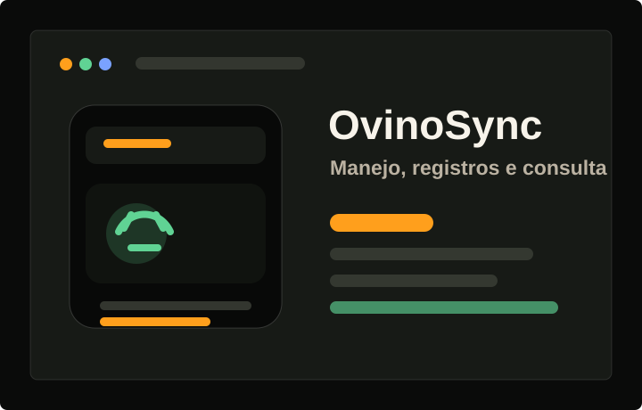
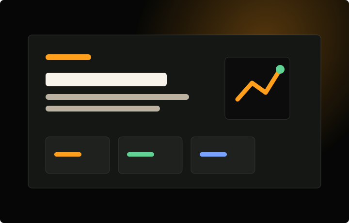
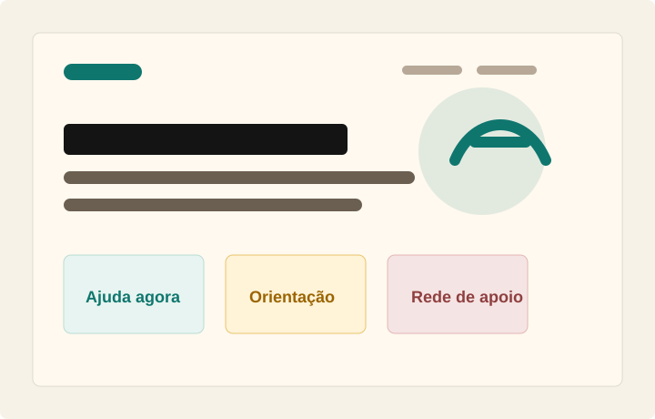

Projetos e estudos
Projetos em construção, estudo e aplicação prática.
Uma seleção inicial de soluções, páginas e experimentos ligados à tecnologia, educação, organização de informações e criação de interfaces digitais.
Sistema aplicado
OvinoSync
Aplicação mobile para apoiar o cadastro de animais, o registro de manejos e a consulta de informações relacionadas à gestão de rebanhos ovinos.
Identidade digital
Portfólio
Página para organizar formação, áreas técnicas, experiências e projetos de forma visual, responsiva e objetiva.
Ver página inicial
Informação e orientação
Ponto de Apoio
Site informativo sobre violência doméstica, com foco em orientação, acolhimento, canais de ajuda, rede de apoio e acesso a informações essenciais.
Abrir projeto →